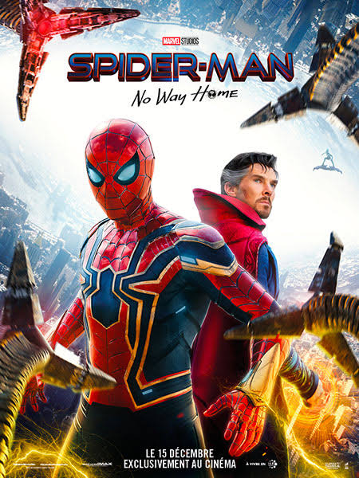

Spiderman No Way Home
Pour la première fois dans son histoire cinématographique, Spider-Man, le héros sympa du quartier est démasqué et ne peut désormais plus séparer sa vie normale de ses lourdes responsabilités de super-héros. Quand il demande de l'aide à Doctor Strange, les enjeux deviennent encore plus dangereux, le forçant à découvrir ce qu'être Spider-Man signifie véritablement.